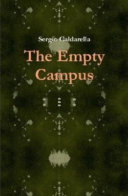

8:20 · 1 OPERE
Lets join Tulsi Gabbard's call for real democracy.
Il filo del discorso
Intervento in inglese nel quale Caldarella aderisce all’appello di Tulsi Gabbard e annuncia l’intenzione di registrarsi come indipendente. Rievoca il proprio precedente sostegno a Obama e critica il rapporto fra Partito Democratico, interessi economici, università e comunicazione. Il riferimento al suo libro The Empty Campus accompagna una riflessione polemica sulla crisi dell’educazione; il finale richiama la rappresentanza popolare e il discorso di Gettysburg.
I libri nel discorso

The Empty Campus
Copertina: Lulu · edizione inglese di riferimento
Immagine associata all’ISBN di riferimento e controllata visivamente; edizione e traduzione non identificate come quelle citate o lette nel video.
Il relatore cita esplicitamente il proprio libro The Empty Campus come trattazione della crisi educativa.
Passaggio 1:58 ↗ · Fonti e libro ↗Minutaggi ricavati da testi automatici, da riascoltare. Le identificazioni probabili sono segnalate accanto ai libri.